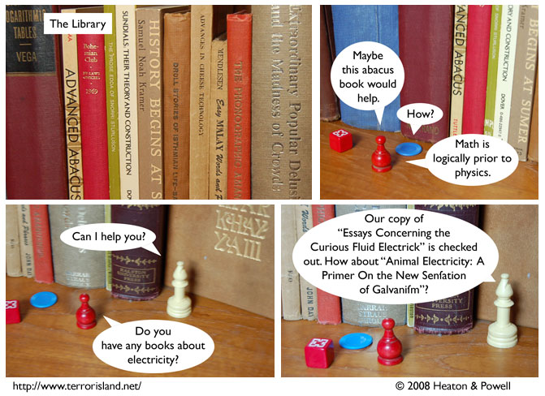

Strip #290
— Friday, April 18, 2008
How do you make a dishonest shortcake?
Notes, Thoughts, &c.
Ben’s Notes
Books I used for the Geography City Library set:
- Logic: Deductive and Inductive
- Diccionario Etimológico
- Seven Place Logarithmic Tables
- Advanced Abacus
- Bohemian Club: Bylaws and Officers
- The Prose Edda of Snorri Sturluson
- Sundials: Their Theory and Construction
- History Begins at Sumer
- Droll Stories of Isthmian Life
- Advances in Cheese Technology
- Easy Malay Words and Phrases
- The Phonographic Amanuensis
- Extraordinary Popular Delusions and the Madness of Crowds
- How to Learn an Unwritten Language
- Thought Transference
- Rubaiyat of Omar Khayyam
Lewis’s Notes
Terror Island is regarded by some as the premiere comic about or having to do with libraries. This is unfortunate as it requires overlooking both the serialized comic Unshelved, as well as the wonderful graphic novel, “Bookhunter” by Jason Shiga.